프로젝트를 시작하게 되면 여러 개발자들과 협업을 진행하게 됩니다. 특히 협업할 때 source 관리를 해야되는데 가장 많이 사용하는 git에 대해 한번 살펴보겠습니다. 이번 포스팅에서는 가장 빈번하게 사용되는 명령어와 git의 흐름 상황을 요약 정리해보겠습니다.
Quick Start
# Check version
1 | git --version |
- git이 제대로 설치되어 있는지 확인하려면 version 체크를 하시면 됩니다.
# Set config values
1 | git config --global user.name 'username' |
global옵션을 주어 git의 사용자와 이메일을 셋팅해 줄 수 있습니다.list옵션을 통하여 셋팅된 목록을 볼 수 있습니다.- 만약 global property를 삭제하고 싶은 경우는
unset옵션을 추가하여 해당 property를 지우시면 됩니다.
ex)git config –global –unset user.name
# Initialize a repository
1 | git init |
- 프로젝트 root 디렉토리에서
init명령어를 통하여 초기화 시킨 이후 .git이라는 파일이 생성됩니다.
# Create a gitignore file
- root 디렉토리에 .gitignore 파일을 만듭니다.
- .gitignore 파일은 git을 통해 소스관리를 할 필요 없는 파일이나 폴더명을 써주시면 됩니다.
# Common workflow
각각의 명령어를 실행하면 어떤 상태인지를 disagram으로 정리해보았습니다. 그럼 위에 나온 명령어들과 함께 간단한 실습을 한번 진행해보겠습니다.
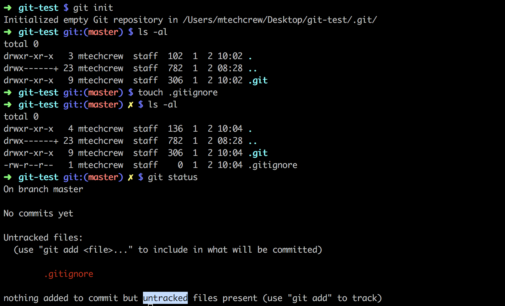
1 | git status |
- 우선 git-test 라는 프로젝트 폴더 하나를 만들고 앞서 얘기했던
git init작업과 .gitignore 파일을 생성하였습니다. git status는 파일의 현재 상태를 알려줍니다. commit을 한번도 진행하지 않았기 때문에 새로 생성된 file은 Untracked files로 분류되어 있습니다.
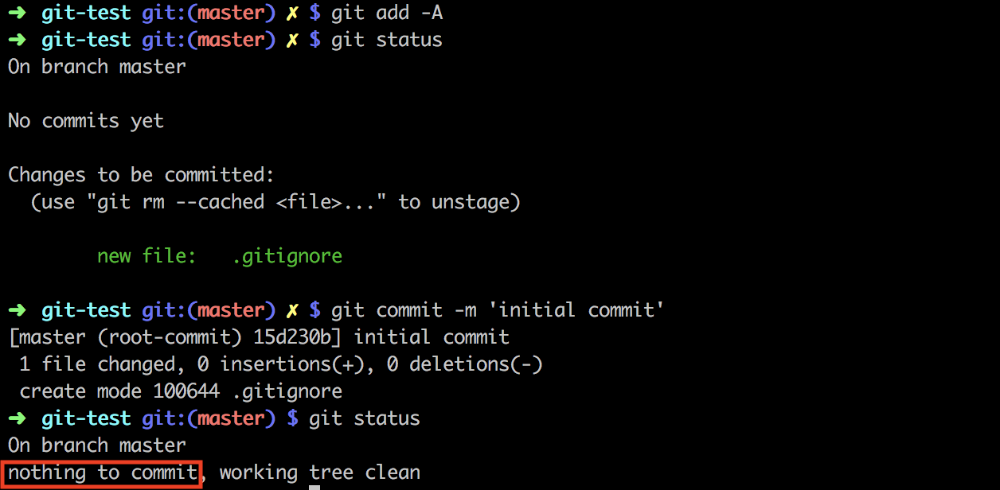
1 | git add -A |
- 현재는 .gitignore 파일 하나만 있어서
git add .gitignore이런식으로 명령어를 입력해도 되지만 여러 파일들을 한번에 staging area로 옮기는 작업을 할려면 간단하게A옵션을 주면 됩니다. - staging area에 잘 옮겨졌는지 체크해보려면
git status명령어를 실행시킵니다. 아까와 다르게 녹색 컬러로 변경된 .gitignore 파일을 확인할 수 있습니다. commit명령어를 통하여 staging area에서 local repository로 옮기고 git 상태를 체크해봅니다. 터미널 캡쳐 마지막 부분을 보면은 nothing to commit 이라고 나옵니다. 더 이상 커밋 작업을 할게 없으므로push작업을 할 차례입니다.
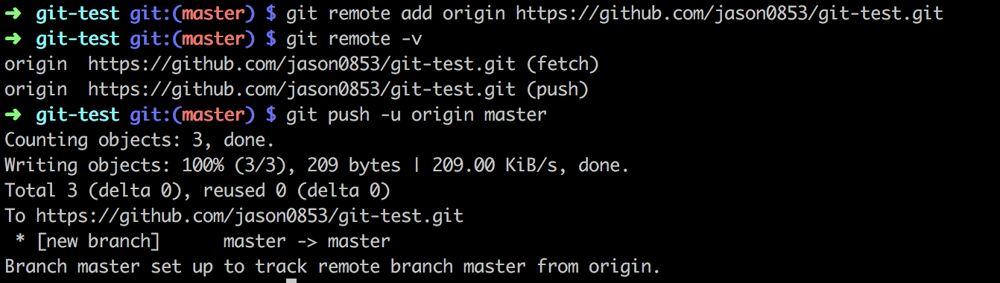
1 | git remote add origin 'your remote url' |
push작업을 하기 위해서는 원격저장소를 추가해야합니다. 필자는 github를 사용하여 원격저장소를 만들었지만 Bitbucket, gitlab 등을 사용하셔도 됩니다.- remote url을 추가한 뒤에
v옵션을 통해 단축이름과 url을 함께 볼 수 있습니다. u옵션을 추가하면은push작업 및pull작업을 진행할때origin master를 명령어와 함께 실행시키지 않아도 됩니다.
ex)git push/git pull
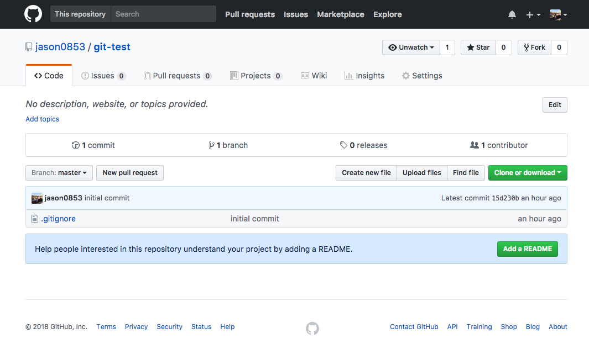
작업이 끝난 뒤 자신의 원격저장소에서 확인해보면 .gitignore 파일이 저장되어 있습니다.
하지만 보통 회사에서 일할 때는 master 브랜치에서 작업하는 경우는 거의 없습니다. 다수의 개발자들과 서로 협업을 해야하므로 각각 브랜치(branch)를 생성해서 이동(checkout)한 다음에 코딩작업을 진행합니다. 코딩작업이 끝난 이후에는 각 개발자들의 작업내역을 master 브랜치로 병합(merge)시킵니다.
그럼 이어서 한번 진행해보겠습니다.
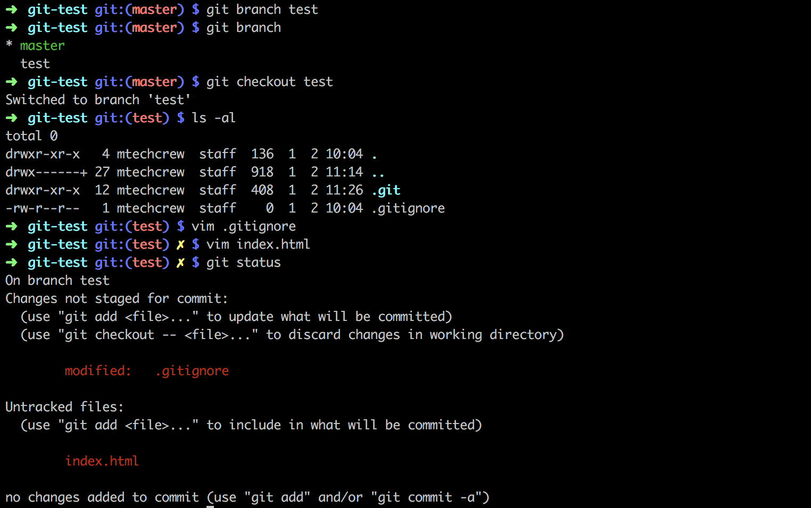
1 | node_modules |
1 |
|
1 | git branch 'new branch name' |
- 필자는 test라는 새로운 브랜치를 하나 생성해서 작업을 진행을 했습니다.
- 새로운 브랜치를 만들고 나서 제대로 생성되었는지 확인하려면
git branch명령어를 실행시켜줍니다. - test 브랜치로 이동하기 위해서
git checkout test명령어를 실행시켜줍니다.
이 때 기존 master(local) 브랜치에 있는 source가 test 브랜치로 복사됩니다. git status로 파일의 체크 상태를 체크해보면 .gitignore 파일은 Untracked files로 분류되어 있지 않습니다.
그 이유는 이미 commit한 files들은 git에 의해 tracking이 되고 있기 때문입니다. 반대로 index.html은 새로 생성한 다음에 commit 작업을 한번도 진행하지 않았기 때문에 Untracked files로 분류되어 있는 것입니다.
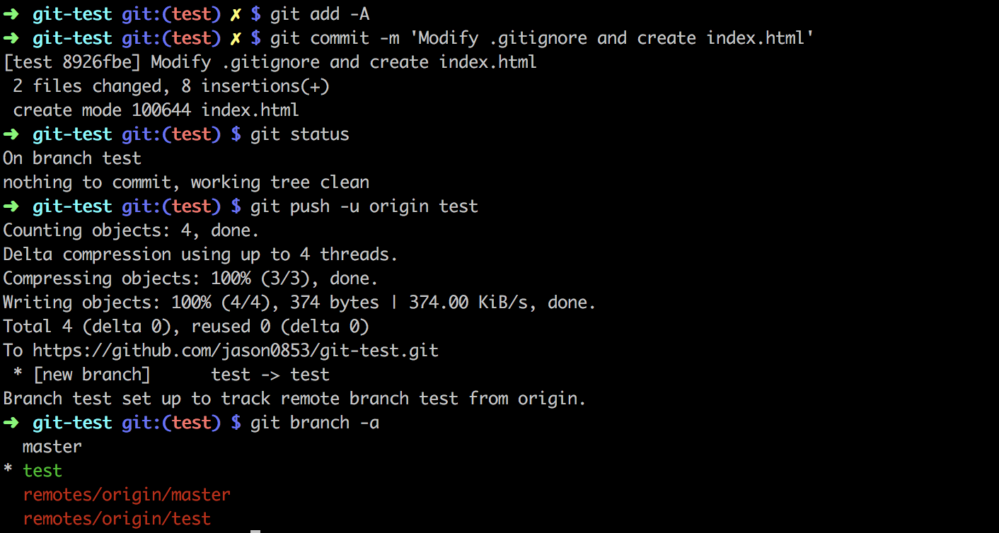
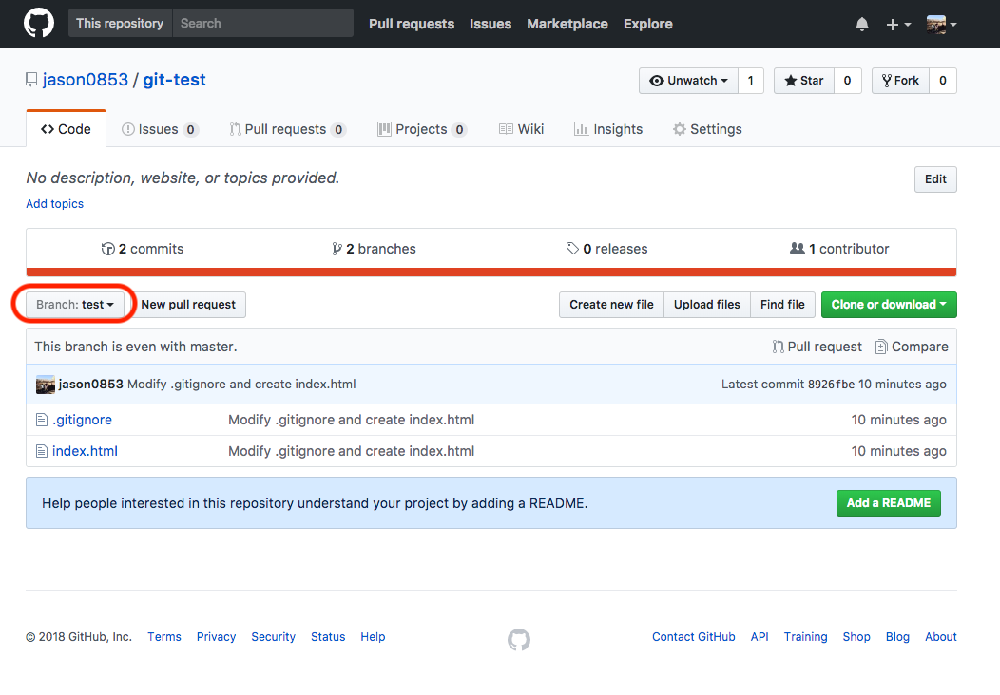
1 | git branch -a |
add,commit,push작업을 순서대로 진행합니다.- 원격저장소에서 test 브랜치로 바꾼 다음 확인하면 위 그림과 같이 푸쉬한 파일들과 commit message들을 확인할 수 있습니다.
a옵션과 함께git branch명령어를 실행시켜면 local 브랜치와 remote 브랜치 둘 다 확인할 수 있습니다.- test 브랜치에서의 작업이 다 끝났으므로
merge작업을 진행해보겠습니다.
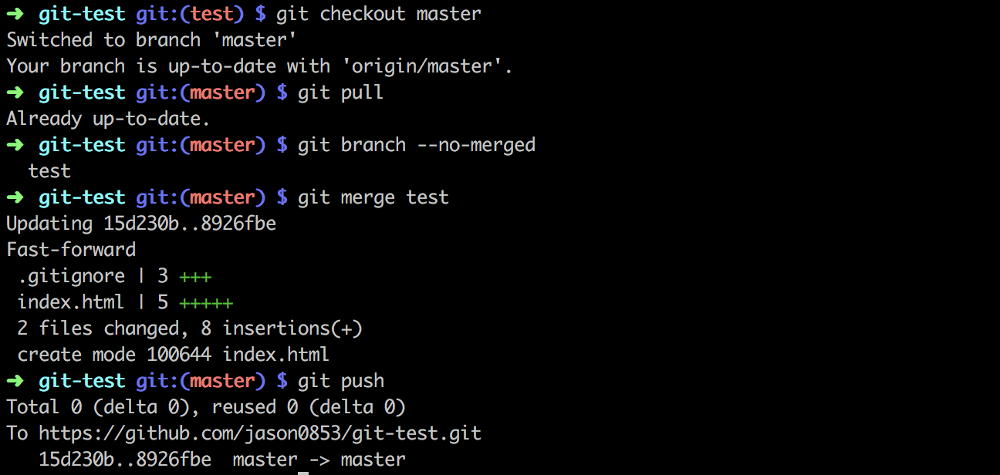
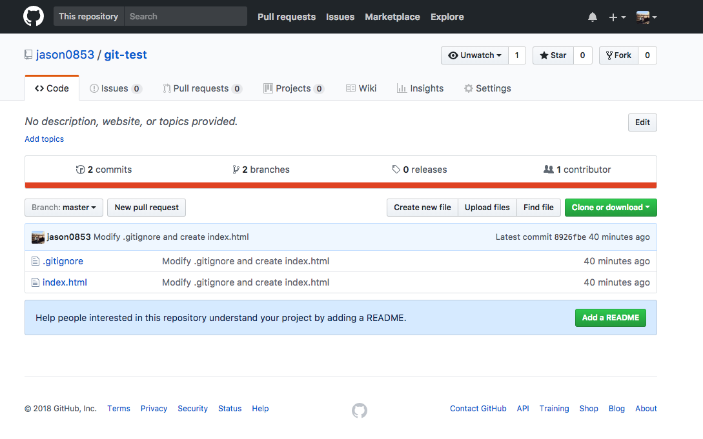
1 | git pull |
- master 브랜치에서 test 브랜치를 병합시킬 것이기 때문에
checkout을 통해 master 브랜치로 이동했습니다.
이미 만들어진 브랜치로 checkout 작업을 진행한 경우에는 source의 변경사항이 없습니다. - 브랜치를 변경한 이후에
pull작업을 하는 이유는 remote master 브랜치와 local master 브랜치의 source를 동기화시키기 위해서입니다.
항상 브랜치를 checkout한 경우에는 conflict를 최소화하기 위해 원격 작업 내역을 병합한 다음 자신의 작업내역을 진행하는 습관을 들이는 것이 좋습니다. no-merged옵션을 통하여 병합하지 않은 branch list를 확인합니다.- test 브랜치를 master 브랜치로 병합시킵니다. 이때 Fast-forward라는 메세지가 나오면서 순식간에 병합이 일어납니다. 즉, merge 할 test 브랜치가 master 브랜치가 가리키는 것보다 앞으로 진행한 commit 이기 때문에 master 브랜치 포인터는 최신 커밋으로 이동하는 방식을 일컫는 말입니다.
- push 작업을 한 뒤 github에 master 브랜치 작업내역을 확인합니다.
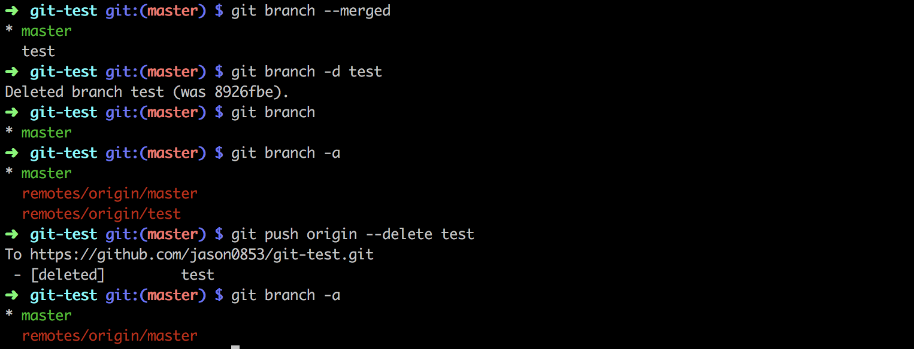
1 | git branch --merged |
merged옵션을 통하여 merge한 브랜치 list를 보여줍니다.- 로컬 브랜치(master, test) 코드가 동일해졌으니
d옵션을 주어 필요없는 test 브랜치를 삭제해줍니다. - 원격 브랜치(remotes/origin/master, remotes/origin/test) 코드도 동일해졌으니 원격 test 브랜치도 삭제시켜줍니다.
delete옵션을 통해 푸쉬합니다.
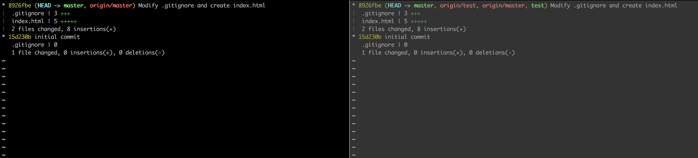
1 | git log --all --decorate --graph --oneline --stat |
- 왼쪽 터미널은 test 브랜치를 삭제하고 나서 log를 확인한 것이며 오른쪽 터미널은 브랜치를 삭제하기 전의 log 캡쳐 사진입니다.
- commit history를 확인합니다.
all- refs/의 모든 참조들의 log들을 출력시켜줍니다.decorate- commit id 오른쪽에 현재 위치해있는 브랜치 name을 보여줍니다.graph- commit id 왼쪽에 line을 생성하여 commit log를 좀 더 시각화 시켜줍니다. 브랜치들간의 차이를 좀 더 쉽게 파악할 수 있습니다.oneline- 한줄로 요약해서 보여줍니다.stat- 변경된 파일들의 목록을 보여줍니다.
Wrap-up
지금까지 git의 기초와 일반적인 workflow에 대해 알아보았습니다. 실무에서는 이보다 훨씬 더 복잡한 구조로 되어 있기 때문에 기본 개념을 제대로 이해하셔야 conflict 났을 경우 대처하기가 쉽습니다. command line 이 익숙하지 않은 분들에게는 SourceTree라는 GUI 툴을 추천합니다.